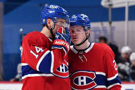

Los Canadiens de Montréal (en inglés, Montreal Canadiens, en español Canadienses de Montreal) son un equipo profesional de hockey sobre hielo de Canadá con sede en Montreal, Quebec. Compiten en la División Atlántico de la Conferencia Este de la National Hockey League (NHL) y disputan sus partidos como locales en el Centre Bell. El equipo, cuyo nombre oficial es Le Club de hockey Canadien, fue fundado en 1909 y es el club de hockey sobre hielo más antiguo del mundo, además del único existente antes de la creación de la NHL. Los Canadiens son la franquicia más laureada del hockey sobre hielo norteamericano. A lo largo de su historia han ganado un total de veinticuatro Stanley Cup, ocho títulos de conferencia y veinticuatro títulos de división. Asimismo, son el equipo con más números retirados de toda la NHL y el que cuenta con más miembros en el Salón de la Fama del Hockey sobre Hielo.
Los Canadiens fueron creados en 1909, como parte de la National Hockey Association. Ganaron su primera copa Stanley en 1916, liderados por sus estrellas Édouard "Newsy" Lalonde y el portero Georges Vezina. Los Canadiens se unieron a la LNH en 1917; Joe Malone fue el primer jugador en ganar el trofeo Art Ross. En 1924 volvieron a ganar la Copa Stanley, con jugadores como Billy Boucher. Howie Morenz era una gran estrella en los comienzos de la LNH. Era conocido por su perfecto movimiento sobre la cancha. Morenz ganó el Trofeo Hart al mejor jugador de la liga en tres ocasiones. El portero George Hainsworth jugó en ese mismo equipo, y junto con otros jugadores como Aurel Joliat, ganaron la Copa Stanley en 1930 y 1931. La siguiente copa llegaría 13 años después. Un joven llamado Maurice "The Rocket" Richard, el portero estrella Bill Durnan, Héctor "Toe" Blake, y Elmer Lach lideraron a los Canadiens hacia el título en 1944, así como en 1946. Richard marcó 50 goles en una temporada de 50 partidos en 1944-45. Nadie repitió esa hazaña en los 36 siguientes. Lideró la clasificación de goleadores de la LNH en cinco ocasiones.

Los Canadiens se convirtieron en un equipo muy poderoso en la década de los 1950. Liderados por el legendario Jean Beliveau, Doug Harvey (ganador de siete Trofeos Norris como mejor defensa, seis de ellos en Montreal), Bernie "Boom Boom" Geoffrion, Dickie Moore, Jacques Plante (ganador de siete Trofeo Vezina), y Richard (junto con su hermano menor, Henri, apodado "Pocket Rocket"), el equipo ganó la copa en 1953, y cinco de manera consecutiva, desde 1956 hasta 1960. También la ganaron en 1965, 1966, 1968 y 1969. Otros nuevos jugadores lideraron al equipo en los setenta: Guy Lafleur, Ken Dryden, Bob Gainey, Larry Robinson e Yvon Cournoyer llevaron a los Canadiens a la conquista de la Copa Stanley en 1971, 1973, y cuatro veces consecutivas, desde 1976 hasta 1979. En 1979, los Canadiens habían ganado 16 Copa Stanley en 27 años. Al crecer el número de equipos, se convirtió la tarea de ganar en más difícil, pero el portero Patrick Roy les llevó a los Canadiens a ganar en 1986 y 1993. Hoy en día los Canadiens son apoyados en toda la ciudad de Montreal. El portero José Théodore añadió otro trofeo Hart al palmarés del equipo en 2002. A partir de su última Copa Stanley, el equipo ha tenido una gran sequía ganando solo dos títulos de division (2008 y 2013) y haber llegado a la final de conferencia en el 2010 contra los Philadelphia Flyers y el 2013 contra los New York Rangers , sin embargo no han podido ganar alguna Copa Stanley desde 1993. En la serie de postemporada por la Copa Stanley 2021, los Canadiens eliminarón a los Toronto Maple Leafs en la semifinal de la División Norte en siete juegos, luegon, los Canadiens eliminarón a los Winnipeg Jets en la final de la División Norte en cinco juegos y en la semifinal de liga, los Canadiens eliminaron a Vegas Golden Knights en seis juegos para su primera final de la Copa Stanley desde 1993.